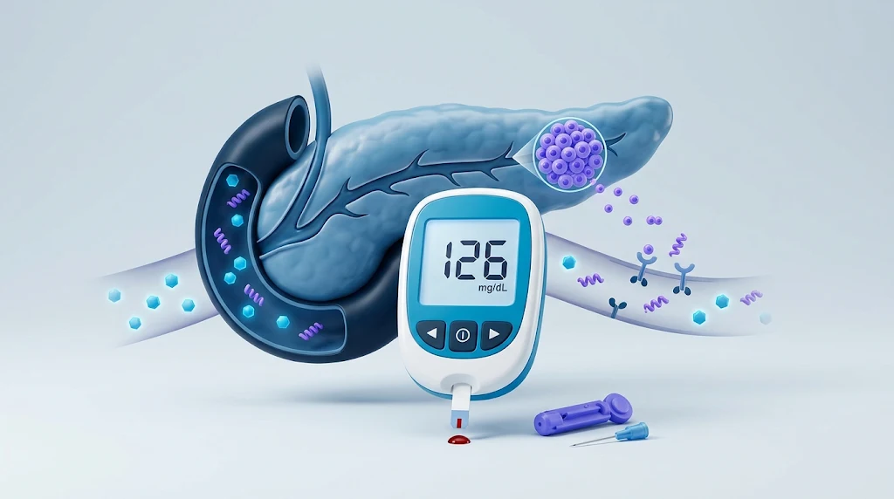

Enfermedades endocrinas y metabólicas
Diabetes tipo 2: factores de riesgo y prevención
Aprende qué es la diabetes tipo 2, cuáles son sus factores de riesgo, cómo reconocerla, prevenirla y reducir el riesgo de complicaciones.

En pocas palabras
- La diabetes tipo 2 es una enfermedad crónica en la que el organismo no utiliza adecuadamente la insulina o no produce suficiente cantidad para mantener la glucosa (azúcar) en la sangre dentro de valores saludables.
- Puede desarrollarse durante años sin causar síntomas evidentes. Sin embargo, cuando la glucosa permanece elevada durante mucho tiempo, puede dañar los ojos, los riñones, los nervios, el corazón y los vasos sanguíneos.
- Aunque existen factores que no podemos modificar, como la edad o los antecedentes familiares, adoptar hábitos saludables puede ayudar a prevenir o retrasar su aparición. Detectarla a tiempo y mantener un tratamiento adecuado también permite reducir el riesgo de complicaciones.
¿Qué es la diabetes tipo 2?
Para comprender esta enfermedad, primero debemos hablar de la glucosa y la insulina.
La glucosa es un tipo de azúcar que circula por la sangre y constituye una de las principales fuentes de energía del organismo. Obtenemos buena parte de ella de los alimentos que consumimos.
Para qje la glucosa pueda entrar en las células y utilizarse como energía, el cuerpo necesita una hormona llamada insulina, que produce el páncreas.
Podemos imaginar la insulina como una llave que permite que la glucosa entre en las células. En la diabetes tipo 2, esta llave no funciona tan bien como debería: las células responden menos a la insulina, una alteración conocida como resistencia a la insulina.
Al principio, el páncreas intenta compensar esta situaci>n produciendo más insulina. Sin embargo, con el paso del tiempo puede perder la capacidad de producir la cantidad necesaria. Como resultado, la glucosa comienza a acumularse en la sangre.
La diabetes tipo 2 es la forma más frecuente de diabetes y representa la gran mayoría de los casos. A diferencia de la diabetes tipo 1, no suele deberse a una destrucción autoinmune de las células que producen insulina, sino a la combinación de resistencia de esta hormona y una producción insuficiente.[1]
No apar3ce simplemente por comer azúcar. Su desarrollo depende de múltiples factores, entre ellos la predisposición genética, el peso corporal, la actividad física y otros aspectos relacionados con la salud y el entorno.
La magnitud del problema es considerable: según la Organización Mundial de la Salud (OMS), el número de personas que vivían con diabetes en el mundo aumentó de 200 millones en 1990 a 830 millones en 2022..[1]
¿Cuáles son los factores de riesgo?
La diabetes tipo 2 no tiene una única causa. Se desarrolla por la combinación de diferentes factores que pueden aumentar la probabilidad de padecerla.
Algunos no se pueden modificar, pero otros están relacionados con nuestros hábitos y pueden abordarse mediante cambios en el estilo de vida.
Factores que no podemos modificar:
- Antecedentes familiares: tener padres o hermanos con diabetes tipo 2 aumenta la probabilidad de desarrollarla.
- Edad: el riesgo aumenta con los años, auqnue también puede presentarse en adultos jóvenes.
- Antecedentes de diabetes gestacional: las mujeres que tuvierok diabetes durante el embarazo tienen mayor probabilidad de desarrollar diabetes tipo 2 posteriormente.
Factores que sí podemos modificar:
- Sobrepeso y obesidad: especialmente cuando existe acumulación de grasa abdominal, que se relaciona con una mayor resistencia a la insulina.
- Sefentarismo: pasar mucho tiempo sin actividad física dificulta el aprovechamiento de la glucosa por parte de los músculos..
- Alimentación poco saludable: consumir habitualmente bebidas azucaradas, alimentos ultraprocesados y productos con exceso de grasas poco saludables puede contribuir al aumento de peso y al riesgo metabólico.
- Tabaquismo: fumar se asocia con un riesgo entre un 30% y un 40% mayornde desarrollar diabetes tipo 2 en comparación con no fumar. [5]
- Prediabetes: ocurre cuando la glucosa está por encima de los valores normales, pero todavía no alcanza los criterios para diagnosticar la diabetes. Es una señal de alerta que permite intervenir antes de que la enfermedad aparezca.
También existen condiciones asociadas a un mayor riesgo, como la hipertensión arterial, las alteraciones de los lípidos en la sangre -por ejemplo, triglicéridos elevados o colesterol HDL bajo- y el síndrome de ovario polisquístico.
Tener uno o varios factores de riesgo no significa que necesariamente desarrollarás diabetes. Sin embargo, conocerlos permite identificar quiénes pueden beneficiarse de una evaluación médica y de medidas preventivas.
¿Cuáles son los síntomas?
Uno de los principales problemas de la diabetes tipo 2 es que puede avanzar durante años sin producir molestias evidentes. Algunas personas descubren que la tienen durante un examen de sangre de rutina.[1]
Cuando aparecen síntomas, lo más frecuente incluyen:
- Aumento de la sed: necesidad de beber agua con mayor frecuencia.
- Aumento de la cantidad y frecuencia de la orina: especialmente durante la noche.
- Hambre excesiva: sensación de hambre incluso después de comer.
- Casancio: falta de energía o fatiga persistente.
- Visión borrosa: dificultad para enforcar con claridad.
- Perdida de peso involuntaria: puede ocurrir incluso sin cambios en la alimentación o la actividad física.
- Infecciones frecuentes o heridas que tardan en cicatrizar: pueden presentarse en algunas personas.
Estos síntomas no son exclusivos de la diabetes y pueden tener otras causas. Su presencia justifica una evaluación médica, pero no confirma pos sí sola el diagnóstico. Del mismo modo, no tener síntomas no descarta la enfermedad.
¿Qué complicaciones puede causar?
Cuando la glucosa permanece elevada durante mucho tiempo, puede dañar progresivamente los vasos sanguíneos y los nervios. Este daño puede afectar diferentes órganos y sistemas.
Entre las principales complicaciones se encuentran:
- Ojos: la retinopatía diabética es el daño de los pequeños vasos sanguíneos de la retina. Puede afectar la visión y, en casos avanzados, provocar pérdida visual.
- Riñones: la enfermedad renal diabética deteriora progresivamente la capacidad de los riñones para filtrar la sangre.
- Nervios: la neuropatía diabética es el daño de los nervios. Puede causar hormigueo, ardor, dolor o pérdida de sensibilidad, especialmente en los pies.
- Corazón y vasos sanguíneos: aumenta el riesgo de enfermedad cardiovascular, infarto de miocardio y accidente cerebrovascular.
- Pies: la pérdida de sensibilidad y los problemas de circulación pueden favorecer heridas que pasan inadvertidas, infecciones y, en situaciones graves, amputaciones.
Es importante recordar que estas complicaciones no son inevitables. Mantener un buen control de glucosa, la presión arterial y los lípidos, además de realizar controles médicos periódicos, ayuda a reducir el riesgo de desarrollarlas o retrasar su progresión. [1][5]
¿Cómo se diagnostica la diabetes tipo 2?
El diagnóstico se realiza mediante análisis de sangre que permiten medir la cantidad de glucosa o estimar cómo se ha comportado durante los últimos meses.
De acuerdo con los criterios de la Asociación Americana de Diabetes (ADA) 2026, se considera diabetes cuando se cumple al menos uno de los siguientes criterios: [2]
| Prueba | Resultado compatible con diabetes: |
|---|---|
| Hemoglobina glicosilada (HbA1c) | ≥ 6.5% |
| Glucosa en ayunas | ≥ 126 mg/dL |
| Glucosa a las 2 horas de una prueba de tolerancia oral con 75 g de glucosa | ≥ 200 mg/dL |
| Glucosa tomada en cualquier momento del día | ≥ 200 mg/dL, acompañado de síntomas clásicos de hiperglucemia o una crisis hiperglucémica. |
La hemoglobina glicosilada (HbA1c) es una prueba que estima el promedio de glucosa en la sangre durante los últimos dos a tres meses. La glucosa en ayunas se mide después de no consumir alimentos ni bebidas con calorías durante al menos ocho horas.
Si una persona no presenta síntomas claros, ni una elevación inequívoca de la glucosa, generalmente se necesita repetir la prueba o realizar otra prueba diagnóstica para confirmar el resultado.
Es importante señalar que un glucómetro doméstico puede ayudar a controlar la glucosa, pero sus mediciones no sustituyen los análisis de laboratorio para establecer el diagnóstico.
Además, algunas condiciones, como ciertos tipos de anemia, alteraciones de la hemoglobina, embarazo o cambios en la vida de los glóbulos rojos, puede afectar la interpretación de la HbA1c. En esos casos, el profesional de salud debe valorar qué prueba es la más adecuada.
¿Qué es la prediabetes?
La prediabetes es una condición en la que los niveles de glucosa están por encima de lo normal, pero todavía no alcanzan los valores necesarios para diagnosticar diabetes.
Según los criterios de la ADA 2026, se identifica mediante cualquier de los siguientes resultados:
| Prueba | Valores de prediabetes: |
| Hemoglobina glicosilada (HbA1c) | 5,7 - 6,4% |
| Glucosa en ayunas | 100 - 125 mg/dL |
| Glucosa a las 2 horas de una prueba de tolerancia oral con 75 g de glucosa | 140 - 199 mg/dL |
La prediabetes no significa que inevitablemente desarrollarás diabetes. Es una oportunidad para intervenir mediante cambios en la alimentación, actividad física y otros hábitos, además de realizar seguimiento médico.
¿Quiénes deberían realizarse pruebas de detección?
Como la diabetes tipo 2 puede permanecer sin síntomas durante mucho tiempo, las pruebas de detección permiten identificarla antes de que aparezcan complicaciones.
Según las recomendaciones de la ADA 2026:
- Los adultos sin otros factores de riesgo deberían comenzar las pruebas de detección a los 35 años.
- En adultos de cualquier edad con sobrepeso u obesidad y al menos un factor de riesgo adicional, puede ser necesario realizar pruebas antes.
- Las personas con resultados normales deberían repetir la evaluación al menos cada tresaños, aunque puede ser necesario hacerlo antes según sus factores de riesgo.
- Las personas con prediabetes deberían evaluarse al menos una vez al año.
- Las mujeres con antecedentes de diabetes gestacional necesitan seguimiento periódico, generalmente cada uno a tres años.
Estos criterios corresponden a las recomendaciones de la ADA. La frecuencia y el tipo de evaluación deben adaptarse a los antecedentes y condiciones de cada persona. [2]
No esperes a tener síntomas para conversar con un profesional de salud sobre la necesidad de realizarte una prueba.
¿Cómo se trata la diabetes tipo 2?
La diabetes tipo 2 es una enfermedad crónica, pero puede controlarse. El tratamiento busca mantener la glucosa dentro de los objetivos adecuados, prevenir complicaciones y preservar la calidad de vida.
No existe un único tratamiento para todas las personas. El plan se adapta a la edad, los niveles de glucosa, el peso, la función renal, la salud cardiovascular, otras enfermedades y la preferencias de cada paciente.
1. Alimentación saludable
No se trata de dejar de comer o seguir una dieta extremadamente restrictiva. El objetivo es construir una alimentación equilibrada y sostenible.
- Consumir verduras y frutas enteras con regularidad.
- Incluir legumbres, cereales integrales y alimentos ricos en fibra.
- Preferir agua en lugar de bebidas azucaradas.
- Moderar el consumo de productos ultraprocesados, dulces y alimentos con exceso de sal o grasas poco saludables.
- Adaptar las porciones y la distribución de los alimentos a las necesidades individuales.
Una alimentación saludable no solo ayuda a controlar la glucosa, también contribuye a cuidar el corazón y los riñones.
2. Actividad física
La actividad física mejora la sensibilidad del organismo a la insulina y ayuda a utilizar la glucosa como fuente de energía.
Como orientación general, se recomienda acumular al menos 150 minutos semanales de actividad física aeróbica de intensidad moderada, como caminar a paso ligero, montar en bicicleta o nadar. También es conveniente incorporar ejercicios de fortalecimiento muscular varios días por semanas.
Si llevas mucho tiempo sin realizar ejercicio o tienes otras enfermedades, consulta con un profesional para adaptar la actividad a tus condiciones.
3. Medicamentos
Cuando los cambios en el estilo de vida no son suficientes o existen condiciones que requieren un tratamiento específico, el profesional puede indicar medicamentos para controlar la glucosa.
- Metformina: ayuda a reducir la produción de glucosa en el hígado y mejora la respuesta del organismo a la insulina.
- Inhibidores SGLT2: favorecen la eliminación de glucosa a través de la orina. Algunos medicamentos de este grupo ofrecen beneficios para el corazón y los riñones.
- Agonistas del receptor GLP-1: ayudan a regular la glucosa, pueden favorecer la pérdida de peso y algunos ha demostrado beneficios cardiovasculares.
- Sulfonilureas: estimulan al páncreas para que produzca más insulina.
- Insulina: puede ser necesario cuando el organismo no produce suficiente cantidad o cuando se requiere un control más intensivo de la glucosa.
La elección del medicamento depende de las características de cada persona. En pacientes con enfermedad cardiovascular, insuficiencia cardíaca o enfermedad renal crónica, algunos inhibidores SGLT2 y agonistas GLP-1 pueden recomendarse por sus beneficios para esos órganos, incluso cuando la HbA1c ya se encuentra dentro del objetivo establecido.[3]
No todas las personas necesitan los mismos medicamentos ni comienzan necesariamente con el mismo tratamiento. Tampoco se debe suspender, modificar o iniciar un medicamento sin valoración médica.
4. Seguimiento y prevención de complicaciones
El tratamiento no consiste únicamente en medir la glucosa. También requiere vigilar otros aspectos de la salud.
Según cada caso, el seguimiento puede incluir:
- Evaluación periódica de la HbA1c.
- Control de la presión arterial y los niveles de colesterol y triglicéridos.
- Análisis de sangre y orina para vigilar la función renal.
- Exámenes de los ojos para detectar retinopatía.
- Revisión de los pies para identificar heridas, alteraciones de sensibilidad o problemas de circulación.
- Revisión del tratamiento y de los posibles efectos adversos.
La frecuencia de estos controles depende de la evolución de la enfermedad y de las necesidades de cada paciente.
¿Qué es la hipoglucemia?
La hipoglucemia ocurre cuando la glucosa en la sangre desciende por debajo de los valores normales. Se considera hipoglucemia un nivel inferior a 70 mg/dL.
Puede presentarse especialmente en personas que utilizan insulina o determinados medicamentos, como las sulfonilureas.
Algunos síntomas son sudoración, temblores, hambre repentina, palpitaciones, mareo, irritabilidad o confusión.
Si la persona está consciente y puede tragar, debe seguir el plan indicado por su equipo de salud; habitualmente se recomienda consumir una fuente de glucosa de absorción rápida y volver a medir la glucosa después de 15 minutos. Si no mejora, se debe repetir el procedimiento según las indicaciones recibidas.
Si pierde el conocimiento, presenta convulsiones o no puede tragar, no se le debe dar comida ni líquidos por la boca. Es una emergencia médica y se debe solicitar ayuda inmediatamente.
¿Cómo podemos prevenir la diabetes tipo 2?
No todos los casos pueden prevenirse, especialmente cuando existen factores genéticos importantes. Sin embargo, adoptar hábitos saludables puede reducir el riesgo o retrasar la aparición de la enfermedad.
Estas medidas también benefician a las personas que ya tienen diabetes o prediabetes:
- Mantén un peso saludable: si tienes sobrepeso, una reducción moderada y sostenida puede mejorar la sensibilidad a la insulina.
- Muévete con regularidad: evita pasar muchas horas sentado y busca incorporar actividad física a tu rutina.
- Cuida tu alimentación: prioriza alimentos frescos, verduras, frutas enteras, legumbres y cereales integrales.
- Evita las bebidas azucaradas: elige agua como bebida habitual.
- No fumes: abandonar el tabaco aporta beneficios metabólicos y cardiovasculares.
- Realiza controles médicos: especialmente si tienes antecedentes familiares, sobrepeso, hipertensión, prediabetes o diabetes gestacional previa.
La prevención no depende de alcanzar una alimentación perfecta ni de realizar cambios drásticos. Lo más importante es construir hábitos que puedan mantenerse a largo plazo.
Referencias científicas
- Organización Mundial de la Salud (OMS). Diabetes. Ficha informativa, 3 de noviembre de 2026.
- American Diabetes Association Professional Practice Committee. 2. Diagnosis and Classification of Diabetes: Standards of Care in Diabetes—2026. Diabetes Care. 2026;49(Suppl 1). https://doi.org/10.2337/dc26-S002
- American Diabetes Association Professional Practice Committee. 9. Pharmacologic Approaches to Glycemic Treatment: Standards of Care in Diabetes—2026. Diabetes Care. 2026. https://doi.org/10.2337/dc26-S009
- American Diabetes Association Professional Practice Committee. 6. Glycemic Goals, Hypoglycemia, and Hyperglycemic Crises: Standards of Care in Diabetes—2026. Diabetes Care. 2026. https://doi.org/10.2337/dc26-S006
- Organización Panamericana de la Salud (OPS). Día Mundial de la Diabetes 2025.
- Ministerio de Salud Pública del Ecuador. Diabetes mellitus tipo 2: Guía de Práctica Clínica. 2017.
Nota: la guía del MSP Ecuador es una referencia local complementaria publicada en 2017. Para los criterios diagnósticos y las recomendaciones farmacológicas actuales se han priorizado los estándares ADA 2026.